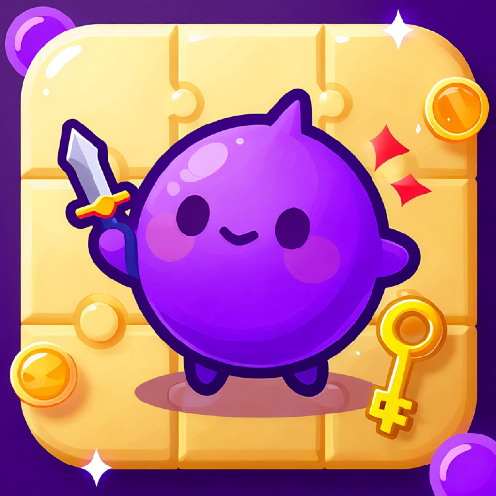

For Crashes
- Open the app again and note which tower or room was active.
- Tell us your iPhone model and iOS version.
- Include the app version shown in App Store or TestFlight.

Pip vs 10 TowersSupport
Use this page for App Store support, troubleshooting, bug reports, and privacy questions.
For support, bug reports, privacy questions, and App Store review follow-up.
Most issues are easier to solve when the report includes the device, iOS version, app version, and what happened right before the issue appeared.
No. Pip vs 10 Towers does not require account creation or login.
The game has no ads or third-party ad tracking. Full Adventure is an optional one-time purchase that unlocks towers 6-10, Hard Daily, and the ending. See the terms page for purchase details.
The first five towers, basic Daily Challenge, local progress, and settings are free to play.
Settings, best score, completed towers, and local progress are saved on the device. Removing the app may remove that local data.
Email support with "Privacy" in the subject, or read the privacy policy for current data practices.
| Item | Why It Helps |
|---|---|
| iPhone model and iOS version | Some layout, performance, haptics, and safe-area bugs only happen on specific devices. |
| App version or TestFlight build number | This lets us match your report to the correct game content and crash data. |
| Tower, room, and what Pip did | Gameplay reports are much easier to reproduce with the exact route, tile action, and boss behavior. |
| Screenshot or short screen recording | Visual problems such as text overlap, stretched art, or unclear icons can be fixed faster with an image. |